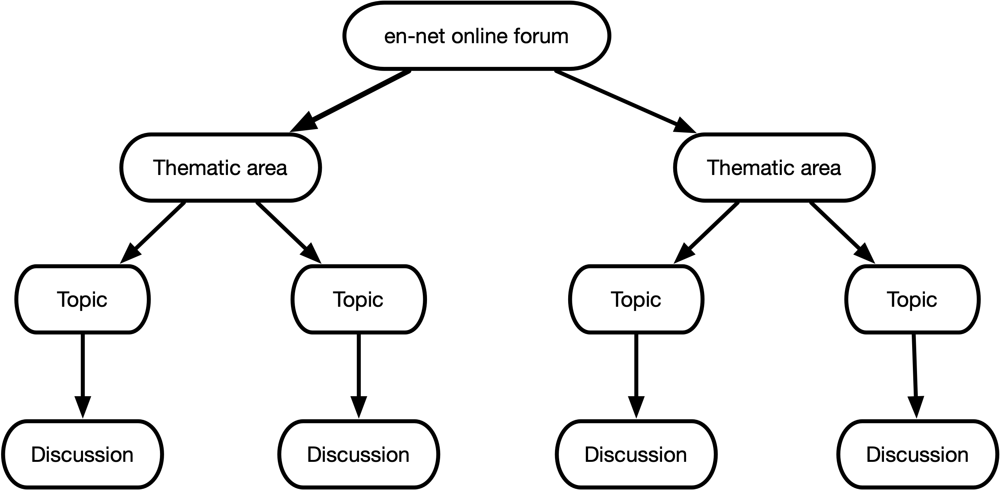

ennet package provides a set of functions that extracts
information from the en-net online forum.
This set of functions was built on top of the rvest package which
provides robust and performant web scraping functions and the dplyr package which
provides a full suite of data manipulation functions. The
ennet package was designed to be able to interact with how
the en-net online forum has been structured.
The en-net online forum website has a very clear and clean structure. The opening page is a list of thematic areas which are linked to each of their respective webpages. In each of these thematic area webpages is another list, this time a list of topics raised within the thematic area. These topics are the text that an online user provides as the title for the question she/he is going to ask. Each of the topics are then again linked to their respective webpages that show the actual full question raised and the ensuing responses and discussion stemming from that question.
The en-net online forum structure can be summarised graphically as follows:

To get a list of thematic areas along with the link
to the webpage of each thematic area, we use the
get_themes() function as follows:
## Load ennet package
library(ennet)
## Get all thematic areas from en-net
get_themes()which results in
#> # A tibble: 17 × 2
#> themes links
#> <chr> <chr>
#> 1 Announcements & Nutritionists needed http…
#> 2 Assessment and Surveillance http…
#> 3 COVID-19 and nutrition programming http…
#> 4 Cross-cutting issues http…
#> 5 Food assistance http…
#> 6 Infant and young child feeding interventions http…
#> 7 Management of small and nutritionally at risk infants under six months… http…
#> 8 Micronutrients http…
#> 9 Partnerships for research http…
#> 10 Management of wasting/acute malnutrition http…
#> 11 Prevention and management of stunting http…
#> 12 Scaling Up Nutrition (SUN) http…
#> 13 Upcoming trainings http…
#> 14 Other thematic area http…
#> 15 Adolescent nutrition http…
#> 16 Simplified Approaches for the Management of Acute Malnutrition http…
#> 17 Costing and cost-effectiveness of wasting programmes http…The resulting table has two columns - the first is named
themes which contains the various thematic
areas on the en-net online forum,
and the second is named links which contains the
corresponding URL for the webpages for each of the thematic
areas.
This will be useful when choosing which themes to focus on when
extracting information. This function outputs an object of the
appropriate class and structure as the required input for the
get_themes_topics() function which would lend to piped
operations between the two functions (see below).
To get a list of topics for a particular theme, we
use the get_theme_topics() function as follows:
## Load dplyr to facilitate data manipulation
library(dplyr)
## Extract data from "Assessment and Surveillance" theme
get_themes() %>%
filter(themes == "Assessment and Surveillance") %>%
select(links) %>%
as.character() %>%
get_theme_topics()which results in
#> # A tibble: 589 × 7
#> Theme Topic Views Replies Author Posted Link
#> <chr> <chr> <int> <int> <chr> <date> <chr>
#> 1 Assessment and Surveillance Resources … 24529 11 Anony… 2011-12-06 http…
#> 2 Assessment and Surveillance Health nut… 126 1 Idris… 2022-07-07 http…
#> 3 Assessment and Surveillance Best suite… 134 0 Sarah 2022-06-13 http…
#> 4 Assessment and Surveillance Which indi… 160 0 Natas… 2022-06-07 http…
#> 5 Assessment and Surveillance Confoundin… 348 4 Anony… 2022-05-24 http…
#> 6 Assessment and Surveillance Is GAM a g… 543 2 Anony… 2022-04-20 http…
#> 7 Assessment and Surveillance Error mess… 894 1 Edem 2022-04-04 http…
#> 8 Assessment and Surveillance Preference… 1488 4 Anony… 2022-03-21 http…
#> 9 Assessment and Surveillance gender and… 1285 1 ISRAE… 2022-03-18 http…
#> 10 Assessment and Surveillance Generating… 1428 1 Elsie… 2022-03-11 http…
#> # … with 579 more rowsThe resulting table contains information on all the topics within the Assessment and Surveillance thematic area including URL links to the corresponding webpages for each topic
To get a list of topics for multiple themes, we use
the get_themes_topics() function as follows:
## Extract data from "Assessment and Surveillance" theme and "Food assistance" theme
get_themes() %>%
filter(themes %in% c("Assessment and Surveillance", "Food assistance")) %>%
get_themes_topics()which results in
#> # A tibble: 622 × 7
#> Theme Topic Views Replies Author Posted Link
#> <chr> <chr> <int> <int> <chr> <date> <chr>
#> 1 Assessment and Surveillance Resources … 24529 11 Anony… 2011-12-06 http…
#> 2 Assessment and Surveillance Health nut… 126 1 Idris… 2022-07-07 http…
#> 3 Assessment and Surveillance Best suite… 134 0 Sarah 2022-06-13 http…
#> 4 Assessment and Surveillance Which indi… 160 0 Natas… 2022-06-07 http…
#> 5 Assessment and Surveillance Confoundin… 348 4 Anony… 2022-05-24 http…
#> 6 Assessment and Surveillance Is GAM a g… 543 2 Anony… 2022-04-20 http…
#> 7 Assessment and Surveillance Error mess… 894 1 Edem 2022-04-04 http…
#> 8 Assessment and Surveillance Preference… 1488 4 Anony… 2022-03-21 http…
#> 9 Assessment and Surveillance gender and… 1285 1 ISRAE… 2022-03-18 http…
#> 10 Assessment and Surveillance Generating… 1428 1 Elsie… 2022-03-11 http…
#> # … with 612 more rowsThe resulting table contains information on all the topics within the Assessment and Surveillance and Food assistance thematic area including URL links to the corresponding webpages for each topic.
To get a list of discussions for a particular
topic, we use the get_topic_discussions()
function as follows:
get_themes() %>%
filter(themes == "Assessment and Surveillance") %>%
get_themes_topics() %>%
filter(Topic == "Resources for coverage assessment") %>%
select(Link) %>%
as.character() %>%
get_topic_discussions()which results in
#> # A tibble: 12 × 10
#> theme topic user userCode job role date_time type code post
#> <chr> <chr> <chr> <chr> <chr> <chr> <dttm> <chr> <chr> <chr>
#> 1 Asses… Reso… Anon… user24 "" Foru… 2011-12-06 11:59:00 ques… 574 "Dea…
#> 2 Asses… Reso… Mark… user31 "" Freq… 2011-12-06 13:24:00 answ… 1536 "And…
#> 3 Asses… Reso… Erne… user999 "Kat… Freq… 2011-12-22 18:02:00 answ… 1603 "Wor…
#> 4 Asses… Reso… Saul… user1000 "Dir… Freq… 2012-01-11 08:59:00 answ… 1664 "And…
#> 5 Asses… Reso… Mark… user31 "" Freq… 2012-05-01 12:29:00 answ… 2076 "Jus…
#> 6 Asses… Reso… Erne… user999 "Kat… Freq… 2012-05-26 09:48:00 answ… 2180 "We …
#> 7 Asses… Reso… Erne… user999 "Kat… Freq… 2012-07-05 11:19:00 answ… 2278 "Dea…
#> 8 Asses… Reso… Mark… user31 "" Freq… 2012-09-17 16:40:00 answ… 2442 "Upd…
#> 9 Asses… Reso… Mark… user31 "" Freq… 2012-11-01 16:19:00 answ… 2615 "And…
#> 10 Asses… Reso… Mark… user31 "" Freq… 2013-04-30 17:19:00 answ… 3288 "The…
#> 11 Asses… Reso… Mark… user31 "" Freq… 2013-09-05 09:56:00 answ… 3445 "Her…
#> 12 Asses… Reso… ALEX… user107… "Act… Norm… 2020-06-11 17:27:00 answ… 7723 "The…The resulting table contains information on all the discussions within the topic on Resources for coverage assessment within the thematic area of Assessment and Surveillance including the text data on the question and the ensuing reply/replies to the question.
To get a list of discussions for a set of
topics, we use the
get_topics_discussions() function as follows:
get_themes() %>%
filter(themes %in% c("Assessment and Surveillance", "Food assistance")) %>%
get_themes_topics() %>%
get_topics_discussions()which results in
#> # A tibble: 3,135 × 10
#> theme topic user userCode job role date_time type code post
#> <chr> <chr> <chr> <chr> <chr> <chr> <dttm> <chr> <chr> <chr>
#> 1 Asses… Reso… Anon… user24 "" Foru… 2011-12-06 11:59:00 ques… 574 "Dea…
#> 2 Asses… Reso… Mark… user31 "" Freq… 2011-12-06 13:24:00 answ… 1536 "And…
#> 3 Asses… Reso… Erne… user999 "Kat… Freq… 2011-12-22 18:02:00 answ… 1603 "Wor…
#> 4 Asses… Reso… Saul… user1000 "Dir… Freq… 2012-01-11 08:59:00 answ… 1664 "And…
#> 5 Asses… Reso… Mark… user31 "" Freq… 2012-05-01 12:29:00 answ… 2076 "Jus…
#> 6 Asses… Reso… Erne… user999 "Kat… Freq… 2012-05-26 09:48:00 answ… 2180 "We …
#> 7 Asses… Reso… Erne… user999 "Kat… Freq… 2012-07-05 11:19:00 answ… 2278 "Dea…
#> 8 Asses… Reso… Mark… user31 "" Freq… 2012-09-17 16:40:00 answ… 2442 "Upd…
#> 9 Asses… Reso… Mark… user31 "" Freq… 2012-11-01 16:19:00 answ… 2615 "And…
#> 10 Asses… Reso… Mark… user31 "" Freq… 2013-04-30 17:19:00 answ… 3288 "The…
#> # … with 3,125 more rowsThe resulting table contains information on all the discussions within all the topics within the thematic areas of Assessment and Surveillance and Food assistance including the text data on the question and the ensuing reply/replies to the question.